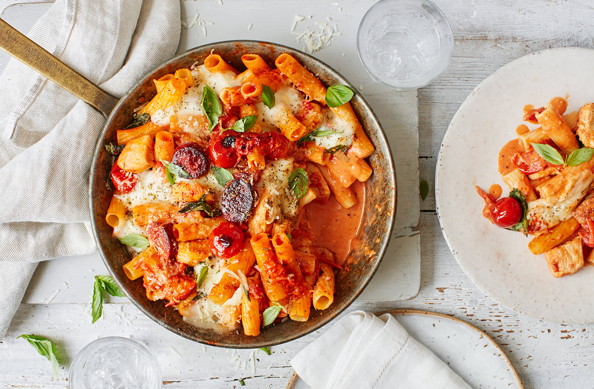

Creamy chicken, tomato and chorizo pasta bake recipe

Description:
Rustle up this comforting pasta bake for a flavour-packed midweek meal. Featuring chunks of smoky
chorizo, a
fragrant tomato sauce and gooey cheese,
it is perfect for cosying up with on cooler nights.
Details:
Serves 4
10 mins to prepare and 40 mins to cook
692 calories / serving
Ingredients:
300g dried rigatoni or penne
100g chorizo, chopped
2 garlic cloves, crushed
3 chicken breasts, cut into chunks
400g tin Tesco Finest cherry tomatoes
400g tin chopped tomatoes
2 tsp dried oregano
30g fresh basil, torn
75g light soft cheese
3 tbsp grated Parmesan cheese
150g mozzarella cheese, finely chopped
Method:
Heat oven to gas 8, 220°C, fan 200°C. Cook the pasta following the packet instructions in
plenty of salted
boiling water. Drain and set to one side.
Heat a large dry ovenproof frying pan on a high heat and cook the chorizo for 3-4 mins,
until
the oils are
released and it starts to crisp. Add the garlic and chicken and fry for 5 mins, to brown. Tip in both
cans
of tomatoes and bring to a simmer, then add ¾ of the oregano, ½ the basil, the soft cheese and some
seasoning. Stir until the cheese has melted into the sauce.
Add the pasta and mix well. Scatter on the Parmesan and mozzarella and the rest of the
oregano. Bake for
20-25 mins, until golden brown and bubbling. Serve with the rest of the torn basil on top.